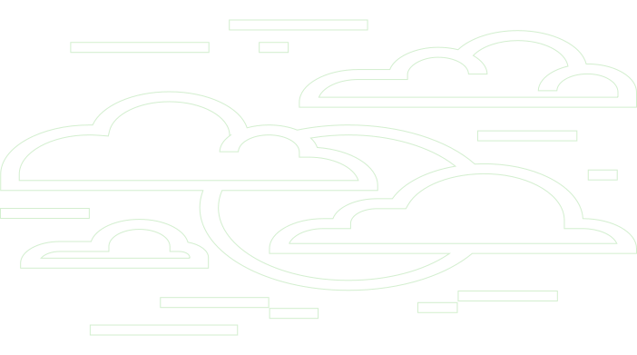
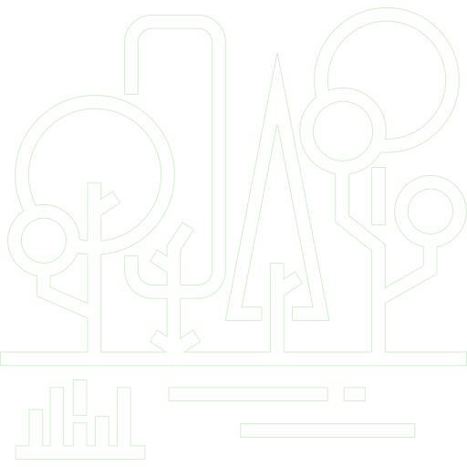

Научные институты Поволжского федерального округа
Проект представляет собой информационный ресурс, посвященный научно-исследовательским институтам и центрам Поволжского федерального округа (ПФО). На сайте собраны актуальные данные об истории, деятельности, ключевых проектах и достижениях ведущих научных организаций региона.

